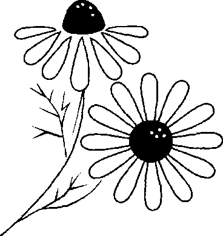
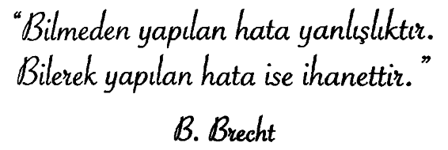

Adam, telaşlı, öfkeli bir hâlde eşine bağırıp çağırıyordu. Babalarının sesini duyan iki çocuk ise yataklarından kalkıp salona gelmişti. Babalarının öfkesini görünce korkuyla birer koltukta sessizce oturup kalmışlardı.
Adam, çocuklara, eşinin üzüntüsüne aldırmadan söylenip duruyordu:
“Söyledim değil mi, söyledim. Bugün toplantı olduğunu, açık mavi gömleği ütülemeni söyledim. ‘Kahverengi gömlekle gidiversen ne olurmuş. Bugün sunum yapacağım, karamsar bir görüntü mü vereyim, dinleyenlerin içi kararsın, bu da projeye verecekleri oyu etkilesin! Bunu mu istiyorsun?”
Aceleyle mavi gömleği ütüleyen eşi, “Tamam, bitti işte,” deyince adam gömleği hışımla aldı ve “Bitti, tabii bitti ama ben geç kaldıktan sonra bitmiş neye yarar,” dedi dinmek bilmeyen öfkesiyle.
Kadın, çocukların korkmuş yüzlerine baktıktan sonra yine eşini sakinleştirmeye çabaladı:
“Dün bundan da geç çıkmıştın, vakit var, yetişirsin.”
“Anlamıyor ki, anlamıyor ki... Bugün sunumu ben yapacağım. Herkesten önce gitmeliyim ki gelecek önemli konuklara, ‘Hoş geldin,’ demeliyim...”
Adam daha bir sürü söz söylenerek, bağırarak çıktı, arabasını çalıştırıp uzaklaştı.
Kadın, direksiyon başında da öfke saçan eşinin hâlinden endişelendi ve ‘Bir kaza yapmasa bari,’ diye düşündü.
Eşi uzaklaşınca çocuklarının yanına giderek, onlara sarılıp rahatlatmaya çalıştı:
“Madem erkenden kalktınız, hemen size sultanlara layık bir kahvaltı hazırlayıp getireceğim.”
Mutfağa geçti, zihnindeki huzursuzluğu dağıtmak için hemen neşeli müzikler çalan bir radyoyu açtı. Ocağa haşlamak için yumurta koydu, cezvede süt ısıtmaya başladı. Masaya zeytin, peynir, reçel koymayı da ihmal etmedi. Biraz sonra çocuklarına seslendi:
“Kahvaltınız hazır!”
Çocuklar kahvaltıya otururken radyoda müziğin birden kesilmesi dikkatini çekti. Son dakika haberi anonsuyla radyonun sesini biraz daha açtı. Radyoda zincirleme bir kaza haberi vardı. “Ayrıntılarla biraz sonra birlikte olacağız,” demişti spiker ama kazanın yerini söylediği andan itibaren o sandalyesine yığılıp kalmıştı.
Spikerin bahsettiği kaza yeri, kocasının her gün işe giderken geçtiği dörtlü kavşaktı. Eşinin bu kavşaktaki trafikten şikâyet etmesi, her sabah yoğun bir trafik olduğunu söyleyişi aklına geldi. “Geç kaldım diye acele edip, acaba o da...” Aklına gelend üşünce içini daha da yaktı, hemen ayağa kalktı.
“Çocuklar, unutmayın ocağa yaklaşmak yasak. Kahvaltınızı yapıp salona geçin, oynayın. Benim acil bir yere uğramam gerek, kapıyı da kimseye açmayın, tamam mı?”
Çocukları uslu, söz dinler olduğu hâlde, onları çok kısa süreli de olsa evde yalnız bırakmak zorunda kalsa tekrar tekrar tembihte bulunurdu.
Sokağa çıkmak için üzerine bir şeyler, cebine de bir taksi parası aldı. Kapıya yöneldiğinde kocasının bu kazada ölmüş olabileceği endişesiyle kabaran yüreğine daha fazla dayanamayıp, ağlamaya başlamıştı. Gözyaşlarını çocukları görmesin diye, açık olan mutfak kapısına sırtını dönmeye özen gösteriyordu.
İçindeki acının kocasının ölmüş olma ihtimali kadar, giderken kendisini kırması ve çocuklarının önünde bağırıp çağırmasından da kaynaklandığını anladı. Oysa her zaman böyle öfkeli değildi. ‘Eğer ölürse, çocuklarım babalarını, son gördükleri hâliyle mi hatırlayacak? Kalp kıran, öfkeli bir baba olarak mı kalacak akıllarında?’ diye düşündü.
Kapıdan çıkarken çocuklarına bir kez daha seslenecekti ama artık akan gözyaşları gizlenemeyecek hâldeydi. Hemen kapıyı açıp dışarı çıkmak için hamle yaptı ama karşısında kapıya doğru adım atmakta olan kocası vardı.
Adam, bir an karısının ıslak yanaklarına bakıp, “Haberleri mi dinledin?” diye sordu.
Eşi, konuşamadan sadece başıyla onayladı. Adam eşine sıkıca sarıldı ve sonra da yanaklarından süzülen gözyaşlarını sildi.
Kadın zorlukla sordu:
“Hani önemli bir toplantına geç kalmıştın, niye döndün?”
“Kaza benim hemen yakınımda oldu. O anda toplantıdan daha önemli bir şeyi unuttuğumu hatırladım. Eğer o kazada ölseydim...”
O anda çocuklar da yanlarına gelmiş, babalarının yine öfkeli olabileceğini düşünerek, annelerinin yanında durmuştu. Adam, bütün içten, samimi gülümsemesiyle çocuklarım yanına çağırdı, boyunlarına sarıldı, yanaklarından öptü.
“Ben bugün büyük bir hata yaptım ve evden çıkarken sizleri ne kadar sevdiğimi söylemeyi unuttum. Böyle önemli bir şey unutulur mu hiç! Ne yapalım, ben de geri döndüm.”